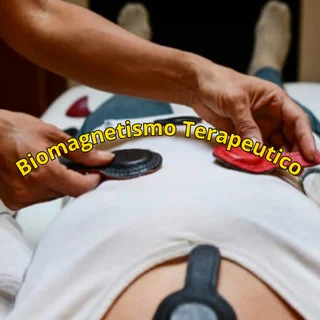
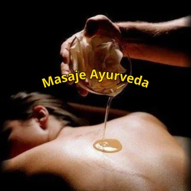
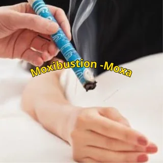
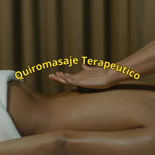
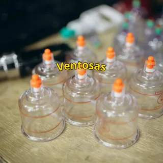
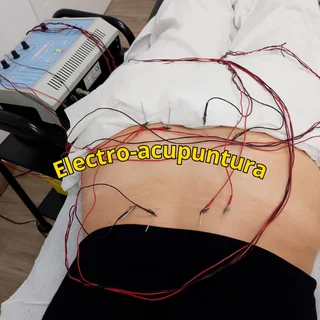

Biomagnetismo
Técnica complementaria basada en la colocación de imanes en distintos puntos del cuerpo, orientada al equilibrio y al bienestar general.
Bienestar y equilibrio corporal
Un acompañamiento cercano y personalizado mediante técnicas manuales y terapias complementarias en San Cristóbal de La Laguna.
Sobre mí
Soy terapeuta masajista especializado en terapias complementarias desde 2014.
Mi interés por estas prácticas nació de una experiencia personal y de la búsqueda de herramientas que me ayudaran a recuperar el bienestar físico, mental y emocional.
Hoy pongo ese aprendizaje al servicio de otras personas, combinando técnicas tradicionales y conocimientos actuales dentro de un acompañamiento respetuoso, cercano y adaptado a cada caso.
Servicios
Conoce las técnicas disponibles y consulta cuál puede encajar mejor contigo.

Técnica complementaria basada en la colocación de imanes en distintos puntos del cuerpo, orientada al equilibrio y al bienestar general.

Masaje inspirado en la tradición ayurvédica que emplea aceites y movimientos continuos para favorecer la relajación corporal.

Técnica tradicional que aplica calor de forma controlada sobre puntos concretos del cuerpo como parte de una sesión personalizada.

Trabajo manual dirigido a descargar la musculatura, reducir tensiones y mejorar la sensación de movilidad y descanso.

Aplicación de copas de succión sobre zonas concretas para complementar el trabajo manual y aliviar la sensación de tensión.

Técnica que combina acupuntura y estimulación eléctrica de baja intensidad dentro de un enfoque terapéutico complementario.
Contacto
Contacta para resolver dudas, conocer la disponibilidad o solicitar una cita.